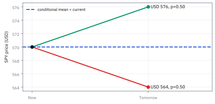
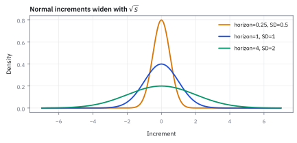

9.1 Three Defining Properties of Brownian Motion
กติกาสามข้อของเส้นทางสุ่ม บังคับให้ความเสี่ยงโตตามรากของเวลา ไม่ใช่ตามเวลา และบังคับให้การขยับเป็นรูประฆัง
SPY อยู่ที่ \$520 แบบจำลองของโต๊ะใช้ drift 8% ต่อปี และความผันผวน 18% ต่อปี ระบบเทรดต้องตั้งกรอบเตือน 95% สำหรับ 30 นาทีข้างหน้า พนักงานใหม่คิดว่า 30 นาทีเป็นเศษเสี้ยวเล็ก ๆ ของปี จึงคูณความผันผวนทั้งปีด้วยสัดส่วนเวลาตรง ๆ ได้ SD \$0.029 และตั้งกรอบ ±\$0.056 กรอบนี้ใช้ได้ไหม?
ลองตอบก่อนเปิดเฉลย
ใช้ไม่ได้ SD ต้องโตตามรากของเวลา SD จริงของ 30 นาทีคือ \$1.635 ใหญ่กว่าที่พนักงานใหม่คิด 57 เท่า กรอบ 95% ที่ถูกคือ −\$3.19 ถึง +\$3.22 รอบราคาเดิม หรือราคา \$516.81 ถึง \$523.22 ส่วนกรอบ ±\$0.056 จะถูกทะลุราว 97 ครั้งในทุก 100 ช่วง แทนที่จะเป็น 5 ครั้ง สัญญาณเตือนจะดังทั้งวันจนไม่มีใครฟัง
ภาพรวมก่อนลงสูตร
Brownian motion คือแบบจำลองของเส้นทางที่ขยับแบบสุ่มทุกขณะ เช่นราคาหุ้นตลอดวัน มันไม่ได้นิยามด้วยสูตรของเส้นทาง แต่นิยามด้วยกติกาสามข้อเกี่ยวกับ “การขยับ” ในช่วงเวลาต่าง ๆ: ช่วงที่ไม่ทับกันไม่เกี่ยวกัน, การขยับในช่วงยาว $s$ เป็น Normal ที่ค่าเฉลี่ยและ variance โตตาม $s$, และเส้นทางห้ามกระโดด
ทำไมต้องรู้กติกาเหล่านี้ทีละข้อ เพราะผลที่โต๊ะใช้ทุกวัน คือ “ความผันผวนคูณรากของเวลา” ไม่ใช่สูตรที่ใครเลือกเอาตามใจ มันถูกบังคับออกมาจากกติกาข้อแรกพอดี หน้านี้จะรีดผลออกมาทีละขั้น: ทำไม variance บวกกันได้ ทำไมมันต้องเป็นเส้นตรงกับเวลา ทำไมรูปทรงต้องเป็นระฆัง และทำไมต้องเขียนกติกาห้ามกระโดดแยก แล้วกลับมาตั้งกรอบ 30 นาทีของ SPY ด้วยตัวเลขจริง
รูปด้านล่างคือภาพของทั้งหน้า: เส้นทางเส้นเดียวที่วาดโดยไม่ยกปากกา กับสองหน้าต่างเวลาที่ไม่ทับกัน ลูกศรคือ “การขยับ” ของแต่ละหน้าต่าง กติกาทั้งสามข้อพูดถึงลูกศรพวกนี้ ไม่ได้พูดถึงระดับของเส้น
รูป — เส้นทางหนึ่งเส้น กับการขยับของสองหน้าต่างที่ไม่ทับกัน
ศัพท์ที่ใช้ในหัวข้อนี้
- Brownian motion
- เส้นทางสุ่มในเวลาต่อเนื่องที่ทำตามกติกาสามข้อของหน้านี้ เขียนย่อว่า $B(\mu,\sigma)$ ใช้เป็นแหล่งความสุ่มพื้นฐานของแบบจำลองราคาทั้งเล่ม Bachelier ใช้มันกับราคาหุ้นในปารีสปี 1900, Einstein ใช้อธิบายอนุภาคที่สั่นในน้ำปี 1905 และ Wiener พิสูจน์ในทศวรรษ 1920 ว่าวัตถุแบบนี้มีอยู่จริงทางคณิตศาสตร์
- Increment (การขยับ)
- ค่าที่ปลายช่วงลบค่าที่ต้นช่วง เช่น $X_{t+s}-X_t$ ใช้วัดว่าช่วงนั้นขยับไปเท่าไร โดยไม่สนว่าก่อนเข้าช่วงอยู่ที่ระดับไหน
- Independent increments
- การขยับของช่วงที่ไม่ทับกันไม่บอกอะไรเกี่ยวกันเลย เป็นกติกาข้อแรก และเป็นเหตุผลที่ variance ของหลายช่วงบวกกันตรง ๆ ได้
- Stationary increments
- การขยับมี distribution ที่ขึ้นกับความยาวช่วงอย่างเดียว ไม่ขึ้นกับว่าเริ่มนับเมื่อไร ครึ่งชั่วโมงตอนเช้ากับครึ่งชั่วโมงตอนบ่ายจึงหน้าตาเหมือนกัน
- Drift และความผันผวน
- drift $\mu$ คืออัตราที่ค่าเฉลี่ยเลื่อนต่อหน่วยเวลา ความผันผวน $\sigma$ คือ SD ต่อรากของหน่วยเวลา หน้านี้ใช้ปีเป็นหน่วย จึงต้องแปลงเวลาเป็นปีก่อนแทนค่าเสมอ
- Excess kurtosis
- ตัวเลข $K=\mathbb E[X^4]/\operatorname{Var}(X)^2-3$ ของตัวแปรที่ค่าเฉลี่ยเป็นศูนย์ ใช้วัดว่าหางหนาแค่ไหน Normal ได้ 0, uniform ได้ −1.2 และหางหนาได้ค่าบวก หน้านี้ใช้มันตอบว่าทำไมต้องเป็นระฆัง
สัญลักษณ์และหน่วย
| สัญลักษณ์ | ความหมาย | หน่วย |
|---|---|---|
| $X_t$ | Brownian motion ที่มี drift $\mu$ และความผันผวน $\sigma$ ที่เวลา $t$ | หน่วยของสิ่งที่จำลอง |
| $t,\ s$ | เวลาเริ่มช่วง และความยาวช่วง | ปี |
| $n,\ \Delta_i$ | จำนวนท่อนที่ซอย และการขยับของท่อนที่ $i$ | นับ, หน่วยของ $X$ |
| $v(s)$ | variance ของการขยับในช่วงยาว $s$ | หน่วยของ $X$ ยกกำลังสอง |
| $S_0,\ \Delta S$ | ราคาตอนนี้ และการเปลี่ยนราคาในช่วงที่ถาม | ดอลลาร์ |
| $\Delta t$ | ความยาวช่วงที่แปลงเป็นปีแล้ว | ปี |
| $\kappa_4,\ K$ | cumulant ตัวที่สี่ และ excess kurtosis | หน่วยยกกำลังสี่, ไม่มีหน่วย |
ขั้นที่ 1 — กติกาสามข้อที่นิยาม Brownian motion
ก่อนคำนวณอะไร ต้องตกลงกันก่อนว่าเส้นทางสุ่มที่ต้องการมีนิสัยอย่างไร บรรทัดข้างล่างเป็นนิยาม ไม่ใช่สิ่งที่พิสูจน์ เลือกเวลาเรียงกันกี่จุดก็ได้ แล้วตั้งชื่อ $\Delta_k$ ให้การขยับระหว่างจุดที่ติดกัน
ข้อ 1 บอกว่าการขยับของช่วงที่ไม่ทับกันเป็นอิสระต่อกัน: โอกาสที่ทุกช่วงจะออกมาแบบหนึ่ง เท่ากับโอกาสของแต่ละช่วงคูณกัน เห็นช่วงเช้าแล้วก็ไม่ได้รู้อะไรเพิ่มเกี่ยวกับช่วงบ่าย (นี่คือนิยามของความเป็นอิสระที่เขียนด้วย CDF)
ข้อ 2 บอกสองเรื่องในบรรทัดเดียว: การขยับขึ้นกับความยาวช่วง $s$ อย่างเดียว ไม่ขึ้นกับเวลาเริ่ม $t$ และมีรูปทรงเป็น Normal ที่ค่าเฉลี่ย $\mu s$ และ variance $\sigma^2 s$ ข้อ 3 บอกว่าเส้นทางห้ามกระโดด เราเรียกสิ่งนี้ว่า Brownian motion ที่มี drift $\mu$ และความผันผวน $\sigma$
สามขั้นถัดไปจะแสดงว่าส่วน “โตตาม $s$” และส่วน “Normal” ในข้อ 2 ไม่ได้เลือกตามใจ แต่ถูกบังคับด้วยข้อ 1, ความไม่ขึ้นกับเวลาเริ่ม และข้อ 3 กรณีที่ $\mu=0$, $\sigma=1$ และเริ่มที่ 0 เรียกว่า standard Brownian motion ซึ่งเป็นก้อนสุ่มมาตรฐานที่ทุกกรณีสร้างจากมันได้
ขั้นที่ 2 — ช่วงยาวคือผลรวมของท่อนสั้น และ variance บวกกันได้
คำถามแรกคือความไม่แน่นอนสะสมอย่างไรเมื่อช่วงยาวขึ้น วิธีตอบคือซอยช่วงยาว $s$ เป็น $n$ ท่อนเท่า ๆ กัน แล้วดูว่ากติกาข้อ 1 ทำอะไรกับผลรวม
บรรทัดที่สองเป็นจริงบนทุกเส้นทาง ไม่ใช่การประมาณ เพราะเมื่อบวกท่อนที่ติดกัน ค่ากลางทุกตัวหักกันหมด เหลือปลายลบต้น
จังหวะที่ใช้กติกาข้อ 1 คือบรรทัดที่ covariance เป็นศูนย์: ตัวแปรที่อิสระกันไม่มี covariance (ผลของความเป็นอิสระ) พจน์ไขว้ทุกคู่จึงหายไป และ variance ของผลรวมเท่ากับผลรวมของ variance ถ้าท่อนที่ติดกันมี correlation พจน์ไขว้จะค้างอยู่ และทุกอย่างต่อจากนี้จะผิด
สิ่งที่บวกกันได้คือ variance ไม่ใช่ SD ภาพที่จำง่ายคือสามเหลี่ยมมุมฉาก: การขยับที่อิสระกันเหมือนสองด้านที่ตั้งฉาก (correlation คือ cosine ของมุมระหว่างสองตัวแปร ตามinner product และมุม) SD ของผลรวมจึงเป็นด้านตรงข้ามมุมฉาก เช่นสองช่วง 30 นาทีของ SPY ที่ SD ช่วงละ \$1.635 รวมเป็นหนึ่งชั่วโมงได้ $\sqrt{1.635^2+1.635^2}\approx\$2.313$ ไม่ใช่ \$3.27
รูป — การขยับที่อิสระกันบวกกันแบบด้านของสามเหลี่ยมมุมฉาก
รูป — ท่อนที่ติดกันไม่บอกอะไรเกี่ยวกัน

ขั้นที่ 3 — ทำไมค่าเฉลี่ยและ variance ต้องเป็นเส้นตรงกับเวลา
การบวก variance ยังไม่ได้บอกว่าแต่ละท่อนมี variance เท่าไร ตอนนี้ใช้ครึ่งแรกของกติกาข้อ 2 เท่านั้น คือ distribution ไม่ขึ้นกับเวลาเริ่ม ตั้งชื่อ $m(s)$ และ $v(s)$ ให้ค่าเฉลี่ยและ variance ของการขยับในช่วงยาว $s$ แล้วดูว่าสองฟังก์ชันนี้ถูกบังคับให้มีรูปอะไร
บรรทัดที่สองคือผลรวม variance ที่เพิ่งได้ โดยทุกท่อนยาว $s/n$ เท่ากัน จึงมี variance $v(s/n)$ เท่ากันหมด เพราะ $v$ ไม่ขึ้นกับว่าท่อนนั้นเริ่มเมื่อไร บรรทัดที่สามคือบรรทัดที่สองหารด้วย $s$ ทั้งสองข้าง: variance ต่อหน่วยเวลาของช่วงยาวเท่ากับของท่อนสั้น ไม่ว่าจะซอยกี่ท่อน
บรรทัดที่สี่ใช้กฎเดียวกันกับช่วงยาว $k/n$ ปีที่ประกอบจาก $k$ ท่อนยาว $1/n$ ปี จึงได้ $v$ เป็นสัดส่วนกับเวลาที่ทุกเศษส่วน ส่วนเวลาที่ไม่ใช่เศษส่วนถูกบีบด้วยเศษส่วนสองข้าง เพราะช่วงยาวกว่ามี variance ไม่น้อยกว่า ($v(s+\epsilon)=v(s)+v(\epsilon)$)
บรรทัดสุดท้ายทำแบบเดียวกันกับค่าเฉลี่ย ซึ่งง่ายกว่าเพราะค่าเฉลี่ยของผลรวมคือผลรวมของค่าเฉลี่ยเสมอ ไม่ต้องใช้ความเป็นอิสระ นี่คือที่มาของ $\mathcal N(\mu s,\sigma^2 s)$ ในกติกาข้อ 2: ทั้ง drift และ variance เป็น “อัตราต่อหน่วยเวลา” ไม่ใช่การเลือก แต่เป็นทางเดียวที่เข้ากับกติกา
ขั้นที่ 4 — ถอดรากกลับมาเป็น SD: ที่มาของกฎรากที่สอง
variance มีหน่วยยกกำลังสอง ใช้คุยกับใครก็ไม่เข้าใจ ต้องถอดรากกลับเป็น SD ซึ่งมีหน่วยเดียวกับสิ่งที่วัด (variance และ SD) การถอดรากนี่เองที่ทำให้ความเสี่ยงโตช้ากว่าเวลา แต่ drift โตเท่าเวลา
ยืดเวลาสี่เท่า ความเสี่ยงโตแค่สองเท่า ถ้าช่วงสั้นคือ 30 นาที ช่วง 2 ชั่วโมงจึงมี SD เป็นสองเท่า และทั้งวันทำการ 390 นาที ซึ่งยาว 13 เท่าของ 30 นาที มี SD เป็น 3.606 เท่า
บรรทัดสุดท้ายคือกับดักของโจทย์เปิดเรื่อง: ถ้าคิดว่า SD เป็นสัดส่วนกับเวลาเหมือน drift จะได้ $\sigma s$ ซึ่งเล็กกว่าของจริง $1/\sqrt s$ เท่า ช่วงยิ่งสั้น ความผิดยิ่งใหญ่ ที่ 30 นาทีซึ่งยาว 0.000305 ปี ความผิดคือ $1/\sqrt{0.000305}\approx57$ เท่า
รูป — SD ของ SPY ตามความยาวช่วง: รากของเวลา เทียบกับคูณเวลาตรง ๆ
รูป — variance โตตามเวลา แต่ความกว้างของระฆังโตตามราก

ขั้นที่ 5 — ทำไมต้องเป็นระฆัง: ลองใช้รูปทรงอื่นแล้วดูว่าพังตรงไหน
คำถามที่ควรถามต่อคือ ทำไมกติกาข้อ 2 ต้องใช้ Normal ถ้าการขยับทุก 30 นาทีเป็น uniform จะผิดตรงไหน? วิธีตรวจคือดูว่ารูปทรงของผลรวมเปลี่ยนอย่างไรเมื่อบวกท่อนอิสระ เครื่องมือคือ cumulant ตัวที่สี่ $\kappa_4$ ของตัวแปรที่ค่าเฉลี่ยเป็นศูนย์ ซึ่งบวกกันได้เหมือน variance (ถ้ามี drift ให้หักค่าเฉลี่ยออกก่อน)
บรรทัดที่สองกระจาย $(X+Y)^4$ ได้ห้าพจน์ พจน์ $4\mathbb E[X^3Y]$ กับ $4\mathbb E[XY^3]$ หายไปเพราะความเป็นอิสระแยกมันเป็น $\mathbb E[X^3]\,\mathbb E[Y]=0$ บรรทัดที่สามกระจาย $(\sigma_X^2+\sigma_Y^2)^2$ ลบสองบรรทัดนี้ พจน์ $6\sigma_X^2\sigma_Y^2$ หักกันพอดี เหลือ $\kappa_4$ ที่บวกกันได้
บรรทัดสุดท้ายรวม $n$ ท่อนเท่ากัน: $\kappa_4$ โต $n$ เท่า แต่ variance ยกกำลังสองโต $n^2$ เท่า excess kurtosis ของผลรวมจึงหดลง $n$ เท่า อ่านกลับด้านก็ได้: ถ้าการขยับของช่วงยาวมี $K$ ท่อนที่สั้นกว่า $n$ เท่าต้องมี $nK$
อีกข้อเท็จจริงหนึ่งบรรทัด: $\operatorname{Var}(X^2)=\mathbb E[X^4]-(\mathbb E[X^2])^2\ge0$ หารด้วย $\sigma^4$ ได้ $\mathbb E[X^4]/\sigma^4\ge1$ คือ $K\ge-2$ เสมอ ทีนี้ลองเลือกรูปทรงแล้วดูว่ารอดไหม
uniform ตายทันที: ถ้าการขยับ 30 นาทีเป็น uniform ($K=-1.2$) ท่อน 15 นาทีสองท่อนต้องมี $K=-2.4$ ซึ่งไม่มีตัวแปรไหนทำได้ ค่า $K$ ติดลบใด ๆ ตายแบบเดียวกันเมื่อซอยละเอียดพอ เพราะทุกครั้งที่ผ่าครึ่ง มันถูกคูณสอง
หางหนารอดทางพีชคณิต แต่ถ้าการขยับรายวันมี $K=3$ ท่อน 1 นาทีต้องมี $K=1{,}170$ คือเกือบทุกนาทีแทบไม่ขยับ แล้วนาน ๆ ทีโดดก้อนใหญ่ นั่นคือหน้าตาของ Poisson ซึ่งกระโดด และกติกาข้อ 3 ห้าม ที่เหลือรอดคือ $K=0$ ทุกสเกล ซึ่ง Normal ทำได้พอดีเพราะ $\mathbb E[Z^4]=3$ (คำนวณได้จาก moment generating function)
ข้อนี้ตรวจแค่โมเมนต์ที่สี่ ทฤษฎีบทเต็มของ Lévy บอกว่า increments อิสระ ไม่ขึ้นกับเวลาเริ่ม และเส้นทางต่อเนื่อง บังคับให้การขยับเป็น Normal ทุกช่วง เราไม่พิสูจน์ในหน้านี้ แต่ภาพเดียวกันคุ้นอยู่แล้วจากทฤษฎีบทลิมิตกลาง: บวกท่อนอิสระมาก ๆ แล้วรูปทรงเดิมถูกลบจนเหลือระฆัง โค้ดท้ายหน้าลองจริงด้วย uniform 30 ท่อน ได้ $K\approx-0.055$ ใกล้ $-1.2/30=-0.04$ ที่สูตรทำนาย และไกลจาก −1.2 ของท่อนเดี่ยวมาก
รูป — เส้นจำนวนของ excess kurtosis: ซอยท่อนแล้ว K ถูกคูณ จนหลุดพื้นที่เป็นไปได้
ขั้นที่ 6 — กติกาข้อ 3: ห้ามกระโดด และทำไมต้องเขียนแยก
SD ของช่วงสั้นหดลงเข้าหาศูนย์ตาม $\sigma\sqrt h$ ฟังดูเหมือนห้ามกระโดดอยู่แล้ว แต่ยังไม่พอ ตัวอย่างค้านคือ Poisson process ซึ่งนับเหตุการณ์ที่เกิดด้วยอัตรา $\lambda$ ต่อหน่วยเวลา มันผ่านกติกาข้อ 1 และความไม่ขึ้นกับเวลาเริ่มครบ
บรรทัดที่สองบอกว่า variance ของช่วงสั้นหดเข้าหาศูนย์เหมือน Brownian ทุกประการ แต่ $N$ โดดขึ้นทีละหนึ่งหน่วยทุกครั้งที่มีเหตุการณ์ บรรทัดที่สามหักค่าเฉลี่ยและหารด้วยราก ได้ $Y$ ที่มี variance เท่ากับเวลาพอดี เหมือน Brownian มาตรฐานทั้งค่าเฉลี่ยและ variance แต่ยังกระโดดทีละ $1/\sqrt\lambda$ ค่าเฉลี่ยกับ variance จึงจับการกระโดดไม่ได้ ต้องมีกติกาข้อ 3 แยก
ข้อ 3 ยังบอกอะไรแรงกว่าที่คิดเมื่อวัดเป็นตัวเลข สมมติว่าข่าวออกกลางวันแล้วราคาที่ซื้อขายได้ของ SPY เปลี่ยนจาก \$519.50 เป็น \$514.20 ภายในหนึ่งวินาที (ตัวเลขสมมติ) หนึ่งวินาทีคือ $1/(252\times390\times60)$ ปี เพราะปีหนึ่งมี 252 วันทำการ วันละ 390 นาที
ในแบบจำลองนี้ SPY ขยับได้ราว 3.85 เซนต์ต่อวินาที gap \$5.30 จึงเป็นการขยับ 137.5 SD ในวินาทีเดียว ซึ่ง Normal ให้โอกาสเป็นศูนย์ในทางปฏิบัติ แบบจำลองไม่ได้บอกว่ามันไม่น่าเกิด มันบอกว่าเกิดไม่ได้
ตลาดจริงกระโดดบ่อย เช่นตอนประกาศงบหรือตอนเปิดตลาดหลังข่าวกลางคืน ข้อ 3 จึงเป็นสมมติฐานที่แพงที่สุดในสามข้อ และเป็นข้อที่ทำให้ hedge ที่ปรับตัวต่อเนื่องฟังดูเป็นไปได้ในทฤษฎี
รูป — variance เท่ากัน แต่เส้นหนึ่งต่อเนื่อง อีกเส้นกระโดด
ขั้นที่ 7 — แปลง 30 นาทีให้เป็นหน่วยปี
โจทย์ให้อะไรมาบ้าง: SPY \$520, drift 8% ต่อปี, ความผันผวน 18% ต่อปี และช่วงเวลา 30 นาที ตลาดหุ้นสหรัฐเปิด 9:30 ถึง 16:00 เวลานิวยอร์ก คือ 6.5 ชั่วโมงหรือ 390 นาทีต่อวัน หนึ่งปีมี 252 วันทำการ ซึ่งมาจากปี 2024 ที่มีวันจันทร์ถึงศุกร์ 262 วัน ลบวันหยุดตลาด NYSE 10 วัน
คำตอบ: 30 นาทีคือ 0.00030525 ปี นาฬิกาของแบบจำลองเดินเฉพาะตอนตลาดเปิด เพราะราคาขยับเฉพาะตอนมีการซื้อขาย ช่วงข้ามคืนจึงไม่ถูกนับเป็นนาที ซึ่งก็คือเหตุผลที่ gap ตอนเปิดตลาดหลุดออกจากแบบจำลอง
ตรวจเองใน 10 วินาที: 30 นาทีคือ $1/13$ ของวันทำการ และวันหนึ่งคือ $1/252$ ของปี จึงได้ $1/(13\times252)=1/3{,}276\approx0.000305$
ขั้นที่ 8 — ค่าเฉลี่ยกับ SD ของการเปลี่ยนราคา
โจทย์ให้อะไรมาบ้าง: ใช้กติกาข้อ 2 กับผลตอบแทน แล้วคูณ $S_0$ เพื่อเปลี่ยนเป็นดอลลาร์: $\Delta S\approx S_0(\mu\Delta t+\sigma\Delta B)$ โดย $\Delta B\sim\mathcal N(0,\Delta t)$ ช่วงสั้นขนาดนี้ราคาแทบไม่เปลี่ยน การใช้ $S_0$ คงที่จึงคลาดน้อยมาก (แบบจำลองที่ราคาโตแบบคูณคือ geometric Brownian motion)
คำตอบ: ใน 30 นาที ค่าเฉลี่ยขยับขึ้นแค่ราว 1.27 เซนต์ แต่ SD คือ \$1.635 ใหญ่กว่า 129 เท่า drift คูณเวลาตรง ๆ ส่วน SD คูณรากของเวลา ช่วงยิ่งสั้น ทิศทางยิ่งจมหายใต้ความผันผวน ถ้ายืดเป็นหนึ่งปี อัตราส่วนเดียวกันเหลือแค่ $0.18/0.08=2.25$
ตรวจเองใน 10 วินาที: $520\times0.18=93.60$ ดอลลาร์ต่อรากของปี และ $93.6\times0.0175\approx1.64$
ขั้นที่ 9 — กรอบ 95% และราคาของความผิดแบบพนักงานใหม่
โจทย์ให้อะไรมาบ้าง: ค่าเฉลี่ย \$0.0127 และ SD \$1.6353 ที่เพิ่งได้ และ $\Phi(1.96)\approx0.975$ จากตาราง Normal กรอบ 95% คือค่าเฉลี่ยบวกลบ 1.96 SD
คำตอบ: กรอบ 95% คือ −\$3.19 ถึง +\$3.22 รอบราคาเดิม หรือราคา \$516.81 ถึง \$523.22 ส่วนกรอบของพนักงานใหม่ ±\$0.056 ใช้ SD ที่เล็กไป $1/\sqrt{\Delta t}\approx57.2$ เท่า ราคาจริงจะหลุดกรอบนั้นราว 97.3% ของทุกช่วง 30 นาที
ตรวจเองใน 10 วินาที: $2\times1.64\approx3.28$ ใกล้ 3.21 ที่ใช้ 1.96 แทน 2 และ $0.056/1.635\approx0.034$ SD ซึ่งเป็นกรอบที่แคบจนเกือบทุกการขยับทะลุ
รูป — กรอบ 95% ของ 30 นาที เทียบกับกรอบของพนักงานใหม่
ความผิดที่ให้ตัวเลขผิดโดยไม่มีใครเตือน
คูณ SD ด้วยเวลาแทนรากของเวลา: โจทย์เปิดเรื่องได้ SD เล็กไป 57 เท่า และกรอบเตือนที่ทะลุ 97.3% ของเวลา ความผิดแบบกลับด้านก็เกิดได้ คือคูณ SD รายวันด้วย 252 เพื่อให้เป็นรายปี ซึ่งใหญ่ไป $\sqrt{252}\approx15.87$ เท่า (หน้า standard Brownian motion คำนวณให้ดูกับพอร์ต \$25 ล้าน)
ใช้กฎรากที่สองกับข้อมูลที่ไม่ผ่านกติกาข้อ 1: ถ้าผลตอบแทนวันที่ติดกันมี correlation 0.1 variance ของผลรวม 252 วันคือ $252+2(251)(0.1)=302.2$ หน่วยของ variance รายวัน แทนที่จะเป็น 252 SD รายปีจริงจึงสูงกว่ากฎรากที่สองราว $\sqrt{302.2/252}-1\approx9.5\%$ ทั้งที่ correlation 0.1 ดูเล็กมาก ในภาพสามเหลี่ยมคือมุมระหว่างวันที่แคบกว่ามุมฉาก
เช็ค correlation ของผลตอบแทนแล้วคิดว่าผ่านข้อ 1: ข้อมูลจริงมักมีความผันผวนเกาะกลุ่ม วันที่ขยับแรงมักตามด้วยวันที่ขยับแรง แม้ทิศจะเดาไม่ได้ correlation ของผลตอบแทนใกล้ศูนย์จึงยังไม่พอ ต้องดู correlation ของผลตอบแทนยกกำลังสองด้วย (แบบจำลองที่จับเรื่องนี้คือ GARCH)
ลืมว่ากรอบเป็นของแบบจำลอง: กรอบ \$516.81 ถึง \$523.22 ถือว่าไม่มี gap และหางเป็น Normal ถ้ามีข่าวใหญ่ระหว่างวัน ราคาหลุดกรอบได้บ่อยกว่า 5% มาก
ใช้ทำอะไรบนโต๊ะจริง
กฎรากที่สองเป็นการคำนวณที่ทำทุกวัน: แปลงความผันผวนรายวันเป็นรายปีหรือรายชั่วโมง ตั้งกรอบเตือนของระบบเทรดแบบโจทย์ SPY ข้างบน และแปลง VaR หนึ่งวันเป็น VaR 10 วันตามกรอบของ Basel ด้วยการคูณ $\sqrt{10}\approx3.162$ ไม่ใช่คูณ 10
กติกาสามข้อยังเป็นฐานของ geometric Brownian motion และสูตร Black–Scholes ทุกครั้งที่สูตรเหล่านั้นมี $\sigma\sqrt T$ มันกำลังใช้ “variance โตตามเวลา” ของหน้านี้ และทุกครั้งที่ใครพูดว่า “hedge ต่อเนื่อง” มันกำลังพึ่งกติกาห้ามกระโดด
โจทย์ตรวจความเข้าใจ
1. ใช้ SPY ตัวเดิม (\$520, drift 8%, ความผันผวน 18%) หากรอบ 95% ของ 2 ชั่วโมงข้างหน้า
เฉลย
$\Delta t=120/98{,}280\approx0.0012210$ ปี ค่าเฉลี่ย $520(0.08)(0.0012210)\approx\$0.0508$ SD $=93.60\sqrt{0.0012210}\approx\$3.2706$ ซึ่งเป็นสองเท่าของ 30 นาทีพอดีเพราะเวลายาวขึ้นสี่เท่า กรอบคือ $0.0508\pm1.96(3.2706)$ ได้ −\$6.36 ถึง +\$6.46 หรือราคา \$513.64 ถึง \$526.46
2. พอร์ตมี SD ของ P&L หนึ่งวัน \$1 ล้าน ต้องรายงานความเสี่ยง 10 วันทำการตาม Basel โดยสมมติว่าแต่ละวันอิสระและเหมือนกัน SD 10 วันเป็นเท่าไร และถ้าวันที่ติดกันมี correlation 0.1 จะเป็นเท่าไร?
เฉลย
อิสระกัน: \$1 ล้าน คูณ $\sqrt{10}\approx3.162$ ได้ \$3.162 ล้าน ไม่ใช่ \$10 ล้าน ถ้ามี correlation 0.1 ระหว่างวันที่ติดกัน variance คือ $10+2(9)(0.1)=11.8$ หน่วย (มี 9 คู่วันที่ติดกัน และแต่ละคู่นับสองครั้งในผลรวมของ covariance) SD จึงเป็น $\sqrt{11.8}\approx\$3.435$ ล้าน สูงกว่ากฎรากที่สองราว 8.6%
3. วัด excess kurtosis ของผลตอบแทนรายชั่วโมงได้ 0.6 ถ้าผลตอบแทนรายนาทีอิสระและเหมือนกันทุกนาที มันต้องมี excess kurtosis เท่าไร และถ้าวัดรายชั่วโมงได้ −0.5 เป็นไปได้ไหม?
เฉลย
ใช้กฎ “ผลรวม $n$ ท่อนมี $K$ เป็น $1/n$ เท่าของท่อนเดี่ยว” กลับด้าน: หนึ่งชั่วโมงมี 60 นาที รายนาทีต้องมี $K=60(0.6)=36$ หางหนามาก สอดคล้องกับการกระโดดเล็ก ๆ ที่เกิดนาน ๆ ครั้ง ส่วน −0.5 เป็นไปไม่ได้ถ้าซอยได้ละเอียดตามใจ: ท่อน 30 นาทีต้องได้ −1.0, ท่อน 15 นาทีได้ −2.0 และท่อน 7.5 นาทีได้ −4.0 ซึ่งต่ำกว่าพื้น −2
คำนวณซ้ำด้วย JavaScript
เปิดดูโค้ด
// Standard Normal CDF by Simpson's rule on the density: no library needed.
function Phi(x) {
if (!Number.isFinite(x) || Math.abs(x) > 8) throw new RangeError('Phi needs a finite score within 8');
const n = 4000, h = Math.abs(x) / n, phi = z => Math.exp(-z * z / 2) / Math.sqrt(2 * Math.PI);
let s = 0;
for (let i = 0; i <= n; i++) s += (i === 0 || i === n ? 1 : i % 2 ? 4 : 2) * phi(i * h);
return 0.5 + Math.sign(x) * s * h / 3;
}
// Arithmetic Brownian approximation of a price change over a short horizon.
function horizon(S0, mu, sigma, minutes, minutesPerYear = 252 * 390) {
if (![S0, mu, sigma, minutes, minutesPerYear].every(Number.isFinite)) throw new TypeError('Inputs must be finite numbers');
if (S0 <= 0 || sigma < 0 || minutes < 0 || minutesPerYear <= 0) throw new RangeError('Need price > 0, sigma >= 0, minutes >= 0');
const dt = minutes / minutesPerYear; // years, the unit of mu and sigma
return {dt, mean: S0 * mu * dt, sd: S0 * sigma * Math.sqrt(dt), wrongSD: S0 * sigma * dt};
}
// Share of windows whose true move leaves a band of +/- halfWidth around zero.
function breach(halfWidth, sd) {
if (!(halfWidth >= 0) || !(sd > 0)) throw new RangeError('Need halfWidth >= 0 and sd > 0');
return 2 * (1 - Phi(halfWidth / sd));
}
// Excess kurtosis each of n IID pieces must have so that their sum has excess kurtosis K.
function pieceKurtosis(K, n) {
const k = K * n;
if (k < -2) throw new RangeError(`Impossible: pieces would need excess kurtosis ${k} < -2`);
return k;
}
// Variance of an n-day sum, in daily-variance units, when neighbouring days have correlation rho.
const sumVariance = (n, rho) => n + 2 * (n - 1) * rho;
// mulberry32: a small seeded generator so every reader gets the same numbers.
function uniforms(seed) {
let a = seed >>> 0;
return () => {
a = (a + 0x6D2B79F5) >>> 0;
let t = Math.imul(a ^ (a >>> 15), a | 1);
t ^= t + Math.imul(t ^ (t >>> 7), t | 61);
return (((t ^ (t >>> 14)) >>> 0) + 0.5) / 4294967296;
};
}
// Build moves from n uniform pieces with variance 1/n each; return SD and excess kurtosis.
function uniformSums(paths, n, seed) {
const u = uniforms(seed), a = Math.sqrt(3 / n); // uniform on [-a, a] has variance a^2/3 = 1/n
let m2 = 0, m4 = 0;
for (let p = 0; p < paths; p++) {
let x = 0;
for (let i = 0; i < n; i++) x += a * (2 * u() - 1);
m2 += x * x; m4 += x ** 4;
}
m2 /= paths; m4 /= paths;
return {sd: Math.sqrt(m2), excessKurtosis: m4 / (m2 * m2) - 3};
}
const spy = horizon(520, 0.08, 0.18, 30);
const half = 1.96 * spy.sd, sec = horizon(520, 0.08, 0.18, 1 / 60);
console.log(JSON.stringify({
minutesPerYear: 252 * 390, spy, ratio: spy.sd / spy.mean,
band: [spy.mean - half, spy.mean + half], prices: [520 + spy.mean - half, 520 + spy.mean + half],
z975: Phi(1.96), oneHourSD: spy.sd * Math.SQRT2,
wrong: {half: 1.96 * spy.wrongSD, factor: spy.sd / spy.wrongSD, breach: breach(1.96 * spy.wrongSD, spy.sd)},
scaling: {twoHours: horizon(520, 0.08, 0.18, 120).sd, day: horizon(520, 0.08, 0.18, 390).sd},
oneSecondSD: sec.sd, gapInSD: (519.5 - 514.2) / sec.sd,
kurtosis: {fatDayToMinute: pieceKurtosis(3, 390), hourToMinute: pieceKurtosis(0.6, 60)},
uniformPieces: uniformSums(200000, 30, 91),
autocorrelated: {variance: sumVariance(252, 0.1), sdRatio: Math.sqrt(sumVariance(252, 0.1) / 252)},
basel: Math.sqrt(10), basel10corr: Math.sqrt(sumVariance(10, 0.1))
}));สิ่งที่ควรตอบได้หลังอ่าน
- กติกาสามข้อ: ช่วงที่ไม่ทับกันเป็นอิสระ, การขยับขึ้นกับความยาวช่วงเท่านั้นและเป็น $\mathcal N(\mu s,\sigma^2 s)$, เส้นทางไม่กระโดด
- ความเป็นอิสระทำให้ variance บวกกันได้ (เหมือนด้านที่ตั้งฉาก) และความไม่ขึ้นกับเวลาเริ่มบังคับให้ $v(s)=n\,v(s/n)$ จึงได้ variance เป็นเส้นตรงกับเวลา และ SD $=\sigma\sqrt s$
- excess kurtosis ของผลรวม $n$ ท่อนหดเป็น $K/n$ และต้องไม่ต่ำกว่า −2: uniform จึงใช้ไม่ได้ หางหนาต้องการการกระโดด ที่เหลือคือ Normal
- กรอบ 30 นาทีของ SPY คือ −\$3.19 ถึง +\$3.22 เพราะ SD \$1.635 ใหญ่กว่าค่าเฉลี่ย \$0.0127 ถึง 129 เท่า การคูณ SD ด้วยเวลาทำให้เล็กไป 57 เท่า
- ความต่อเนื่องต้องเป็นกติกาแยก เพราะ Poisson ที่หักค่าเฉลี่ยแล้วมีค่าเฉลี่ยและ variance เหมือน Brownian ทุกประการ แต่กระโดด
หน้าถัดไป standard Brownian motion ตรึงกรณี $\mu=0$, $\sigma=1$ ไว้เป็นก้อนสุ่มมาตรฐาน สร้างมันจากการเดินแบบโยนเหรียญที่ซอยละเอียดขึ้นเรื่อย ๆ แล้วใช้มันแปลงความเสี่ยงข้ามช่วงเวลา จำลองบนคอมพิวเตอร์ และตั้งราคา straddle